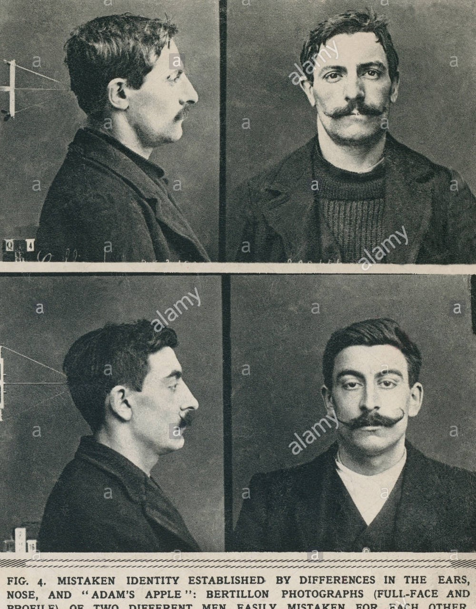

Biometric data is any data collected involving a statistical analysis of biological characteristics. This can refer to measurements, samples, fingerprints and anything that can be used to identify someone. Today, biometric data is commonly used in our everyday lives for criminal identification and things that use authentication systems such as our phones. The earliest forms of biometric security began in the 1800s with the Bertillon system, created by Alphonse Bertillon, a french police officer and biometrics researcher.  This system was used to identify criminals using different measurements and characteristics such as colour of eyes, hair and skin, as well as length of fingers and length of head. Bertillon estimated that the chances of two people having the exact same measurements were 286,435,456 to 1 if 14 traits were used, thus the system was used through France and spread to other countries. However, his system did have flaws. For example, if a crime was committed prior to adulthood, the system would not have any accurate measurements to identify the criminal. And although rare, there was one instance where two seemingly identical males were wrongfully convicted of crimes, due to similar appearance and measurements. However, this flaw in the widely used Bertillon system led to the use of fingerprints for identification. The use of fingerprint identification has become one of the most common ways to unlock our phones, tablets and laptops over the last decade, as well as it is still used for criminal identification. Everyone has a unique fingerprint, with ridges that grow, but do not change shape with age, thus, making them perfect for identification. The identification system began with Sir Francis Galton’s publishing of the book “Fingerprints” in 1892, in which he outlined a classification system based on patterns of arches, loops and whorls. Then in 1896, Sir Edward Henry added to Galton’s technique, creating his own system which he used to identify criminals. The Henry Identification System then replaced the Bertillon system, becoming the primary method for identification. Today, fingerprint identification is still commonly used; however, there are other techniques being developed that we are starting to see. For example, newer phones and laptops now use facial recognition, a system that is able to verify a user by the shape and structure of their face. Retinal scanning is also a very secure system, that scans one’s unique retina blood vessels. Although not as commonly used in our everyday lives, it shows how the development of biometric security and identification has changed drastically in just a couple hundred years.
References
Tracing the History of Biometrics. Retrieved from https://www.govtech.com/Tracing-the-History-of-Biometrics.html.
Division of Criminal Justice Services. Retrieved from https://www.criminaljustice.ny.gov/ojis/history/fp_sys.htm.
Pike, J. Biometrics. Retrieved from https://www.globalsecurity.org/security/systems/biometrics-history.htm.
Images
"Bertillon System" https://www.alamy.com/stock-photo/bertillon-system.html